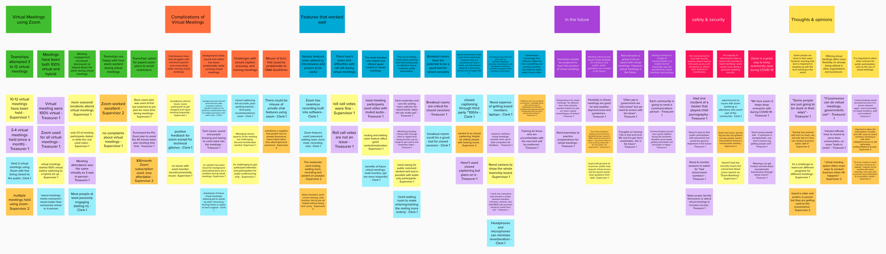
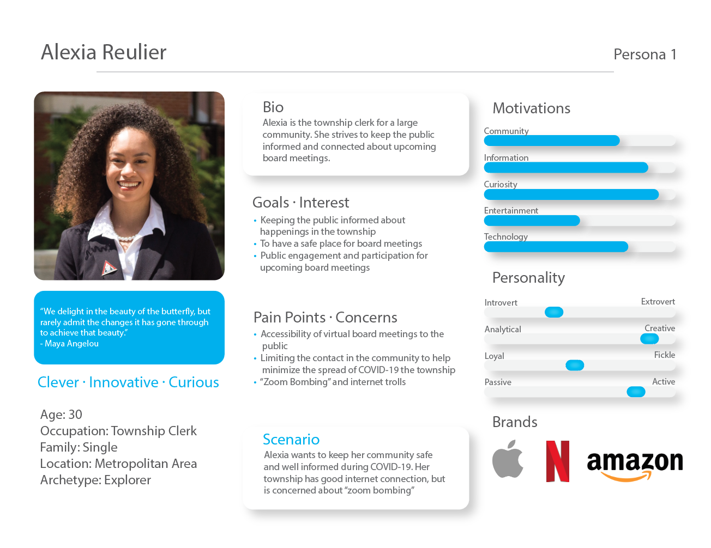
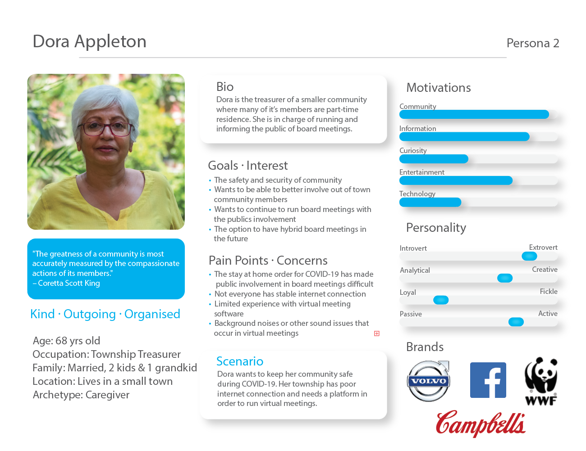
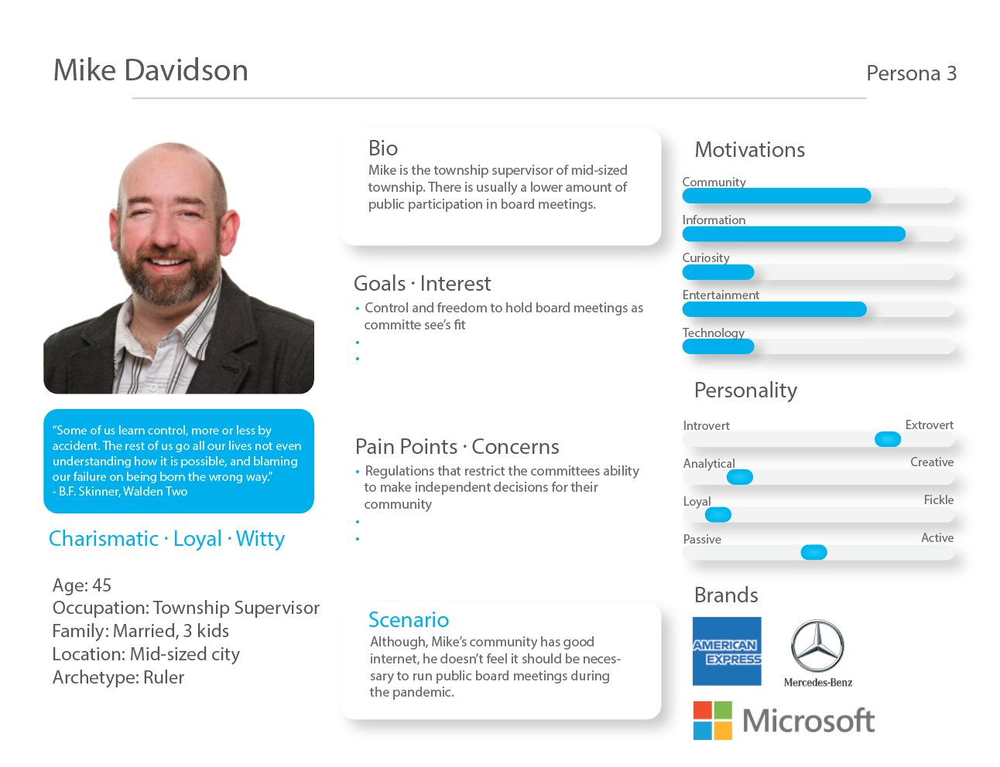

Background
Role
User Experience Researcher
Competitor Analysis | Interviews | Affinity Mapping | Surveys | Needs Evaluation | Personas | Scenarios | Recommendations
Overview
Michigan’s Open Meetings Act (OMA) aims to promote transparency in government.
The Act requires any local governing body to conduct its business in meetings that are open to the public and to provide the public with notice of any such meetings.
It's unclear how local governments can comply with the Act during an infectious disease outbreak and the concomitant social distancing mandates.
In this project we connect with local government officials to develop guidelines for MTA membership on how to host OMA-compliant meetings (e.g., public webinars),
notify the public of these meetings, and safely engage constituents during the COVID pandemic.
Key questions to investigate will include: What has (not) worked well in implementing virtual meetings thus far? Where do local governments need support to comply with OMA?
Additionally, identify communities with limited internet access and research strategies for safely engaging constituents in such areas.
Competitive Analysis
A competitive analysis was performed on the ten software platforms included in MTA’s virtual meeting guidelines under Executive Order 2020-75 and the Open Meetings Act. Eighteen salient features were compared across the ten platforms.
Based on the comparison of the ten software platforms and their features and capabilities, superior platforms for video conferencing and teleconferencing were identified based on features and capabilities offered, pricing, and accessibility to citizens.
The superior platforms identified for video conferencing include GoToMeetings and Zoom (Pro, Enterprise).
The main drawback with Zoom’s free plan is group meetings have a time limit of 40 minutes.
Skype business is not a viable option due to its scheduled discontinuation on July 31, 2021 and will be replaced with Microsoft Teams.
While Microsoft Teams is a good video conferencing platform, it is more comparable to tools like Slack or other platforms that encourage collaboration amongst business teams.
Survey & Interviews
Survey
283 respondents completed the Michigan Township Association’s University of Michigan Covid Consulting Corps (UM CCC) survey. Two survey questions were related to software needs. The first asked respondents to name the software platforms they used to conduct virtual meetings and state what worked well/did not work well. The second question asked respondents to rate 11 software features/capabilities on whether they are "critical," "nice to have but not critical," or "unnecessary" to conduct virtual meetings. Although some respondents chose not to rate every option, each option received over 200 responses.
Interviews
With a basic understanding of respondent viewpoints on critical virtual meeting features, we then interviewed select survey respondents to further understand their experiences. Due to time restrictions and response rates, only four respondents were interviewed: the Pentwater Township Clerk, the Oxford Township Treasurer, the Marquette Charter Township Supervisor, and Chikaming Township Supervisor. All four respondents' townships had successfully held virtual meetings over Zoom and shared their experiences
User Personas & Scenarios
Using data from the UM CCC survey and interviews, personas were created to humanize and represent different user experiences. Personas help define who the user is by creating a brief scenario and highlighting each user’s goals, motivations, and pain points. Below are three use cases defined via the personas corresponding to the three main township categories that represent differing needs and levels of broadband internet access. They've been used to guide the recommendations for each type of township.
User Case 1: Townships with adequate internet connectivity and interest in holding virtual meetings
The scenario associated with this case focuses on a township clerk named Alexia. She wants to keep her community safe and well-informed during COVID-19. Her township has a good internet connection but is concerned about hackers disrupting virtual meetings. This scenario represents concerns voiced both in the UM CCC survey data and during interviews.
User Case 2: Townships with poor internet connectivity that are interested in holding virtual meetings but are concerned about making them accessible to the community
The persona associated with this case focuses on a township Treasurer named Dora. Her township has an unstable internet connection, but she needs a platform to conduct virtual meetings. Her virtual meeting software experience is limited but she understands that virtual meetings can help keep her community safe during COVID-19.
User Case 3 section: Townships with either adequate or poor internet that would like to hold hybrid meetings (in-person township officials with remote resident participants)
The scenario associated with this case focuses on a township supervisor named Mike. He wants the option to continue board meetings in person but the flexibility for the public to attend meetings virtually. His township has a good internet connection and believes a hybrid meeting option will increase public participation. This scenario represents some of the concerns voiced in both the UM CCC survey data and interviews conducted.
